AI Academy · Level 3 · Grade 8 · Week 2 · Student lesson
A Distribution of Possibilities
Learn to understand, design, build, test and explain AI systems responsibly.
Project: Verified Study Buddy
Before you start
AI-2 Week 12: probabilities expressed as fractions or decimals sum over outcomes.
Plan time to read, investigate and explain. Keep predictions separate from observations.
Student lesson · 1 of 14
Your mission
Your learning target
I can check whether a next-token table is a valid probability distribution.
I can calculate a two-step sequence probability using conditional probabilities.
I can explain why token probability does not measure factual truth.
Remember before reading
Close your notes first. A rough first answer helps us choose the right starting point; it is not a score for your ability.
Without opening the old lesson, explain one key idea from Predictive and Generative AI. Give an example and a mistake that the idea helps you avoid.
After trying, check the relevant lesson or ask your teacher. Change the part of your explanation that the evidence shows was wrong.
Week 2: A Distribution of Possibilities
A generator assigns different likelihoods to possible continuations.
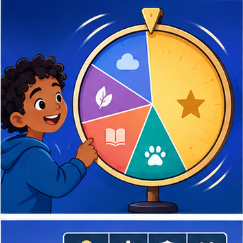
CREATOR MISSION
Run a weighted-word simulation and compare repeated outputs.
Creator name and date:
Readiness for the connected explanation
Why must token counts name the vocabulary and special-token convention?
Readiness for Embeddings and position
Do adjacent vocabulary IDs prove that their tokens have similar meanings?
This week’s end goal
By the end, I can multiply conditional probabilities to compare paths instead of only first tokens.
Student lesson · 2 of 14
Notice the evidence
PICTURE STORY
Notice → Predict → Explain
Begin with visible evidence. Do not explain more than the picture and information support.
MYSTERY
The learners must use a distribution of possibilities to solve a problem. What information do they have? What decision or calculation do they make? What would count as evidence that it worked?
Three observations (what you can point to):
My prediction and the clue supporting it:
A closer explanation
A constructed model uses prefix “Status:” and vocabulary alternatives ready, busy and unknown. Its next-token table is ready 0.5, busy 0.3, unknown 0.2. All entries are nonnegative and sum to 1. A probability belongs to a token under this prefix and model, not to that token in every situation. An omitted vocabulary alternative would make the interpretation incomplete unless its probability were explicitly zero.
A table containing 0.6,0.3,0.3 sums to 1.2 and is not already a probability distribution. If the values are nonnegative weights and the rule says normalise, divide each by 1.2. Do not silently treat weights as probabilities. Negative weights cannot be repaired by this simple normalisation rule.
Apply the connected idea: Embeddings and position
Use a two-token vocabulary: ID 1 means red with embedding [1,0]; ID 2 means blue with embedding [0,1]. This lookup table is constructed, not trained. The input red blue has embedding rows [1,0] and [0,1], so its shape is two sequence positions by two components. Reversing the text reverses the rows. ID 2 is not “twice as blue” as ID 1 is red.
A model needs a way to use order. A collection of vectors without any order-sensitive procedure may lose that distinction. We introduce one explicit toy scheme: add position vector [0,0] at position 0 and [2,0] at position 1. These invented values teach arithmetic; they are not a recommended production encoding.
Student lesson · 3 of 14
See how it works
VISUAL MECHANISM
Input → Process → Output
Trace the information. At each stage, ask what changed and how you could test it.
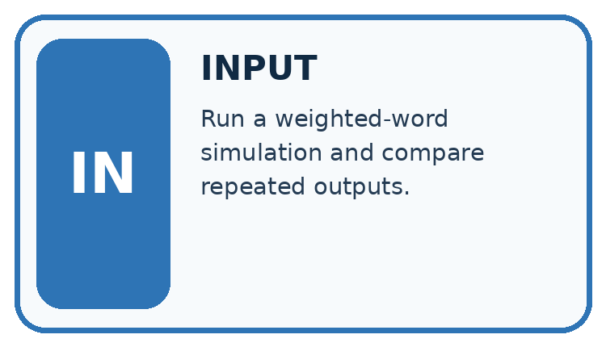
↓
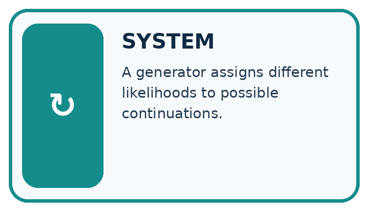
↓
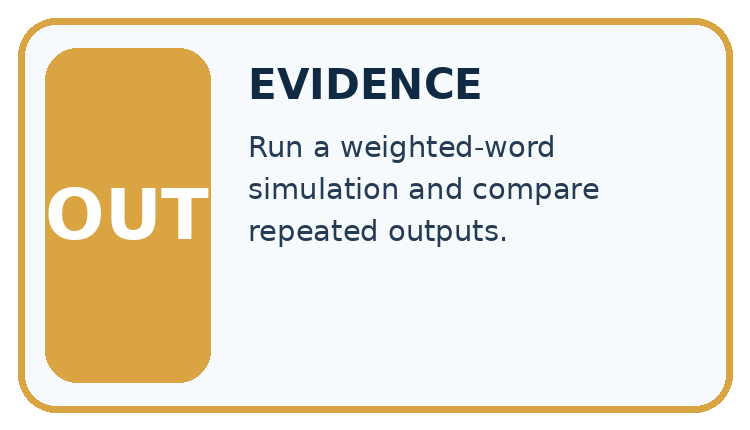
Which stage could fail even when the other two are correct? Explain:
A closer explanation
| Expanded prefix | End probability | Today probability |
|---|---|---|
| Status: ready | 0.8 | 0.2 |
| Status: busy | 0.5 | 0.5 |
| Status: unknown | 1 | 0 |
The probability of ready followed by end is 0.5*0.8 = 0.4. Ready followed by today is 0.5*0.2 = 0.1. Busy followed by end is 0.3*0.5 = 0.15, and busy followed by today is 0.15. Unknown followed by end is 0.2 and unknown followed by today is 0. Together these six two-step paths sum to 1. These products are chain-rule calculations; they do not assume the second token is independent of the first.
Keep the evidence roles separate
Apply the connected idea: Embeddings and position
| Sequence | Position 0 representation | Position 1 representation |
|---|---|---|
| red blue | [1,0] + [0,0] = [1,0] | [0,1] + [2,0] = [2,1] |
| blue red | [0,1] + [0,0] = [0,1] | [1,0] + [2,0] = [3,0] |
The same red token now has [1,0] at position 0 and [3,0] at position 1. Both token identity and position affect the represented row. Addition requires equal widths; adding a three-component position vector to a two-component embedding violates the input contract. Record the position numbering and embedding-table version.
Keep the evidence roles separate
Connect the picture and the explanation
Point to the input, the deciding step and the result in this week’s visual. Explain the same step in ordinary words. A picture helps when you can say what each part represents.
Student lesson · 4 of 14
Compare the cases
CASE GALLERY
Four Tests, Four Kinds of Evidence
A system is not understood until it survives more than one comfortable example.


NORMAL CASE: predict and name evidence. BOUNDARY CASE: predict and name evidence.


MISSING INFORMATION: predict and name evidence. TRANSFER CASE: predict and name evidence.
Which case is most likely to reveal a hidden assumption? Why?
Change one thing in the pictured case
Change: Raise end-given-sun to 0.8 and lower more-given-sun to 0.2.
Prediction: sun→end becomes 0.44, beating unchanged rain→end 0.405.
Reason: Changing one conditional distribution changes its path products while the first-token probabilities remain fixed.
Student lesson · 5 of 14
Words that unlock the idea
VOCABULARY LAB
Words You Can Use to Reason
A definition matters when you can recognize the idea, use it, and contrast it with a near-miss.
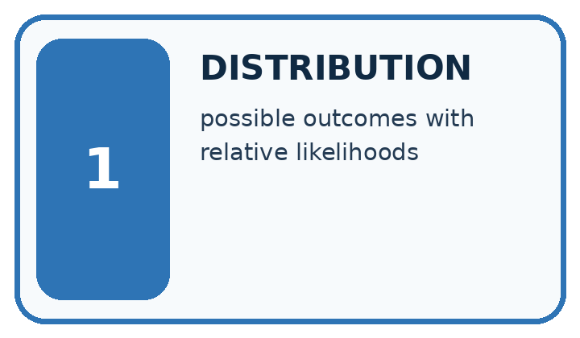
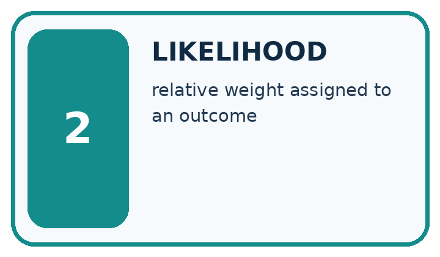
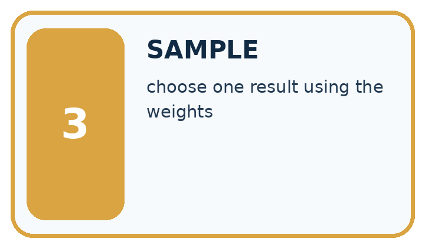
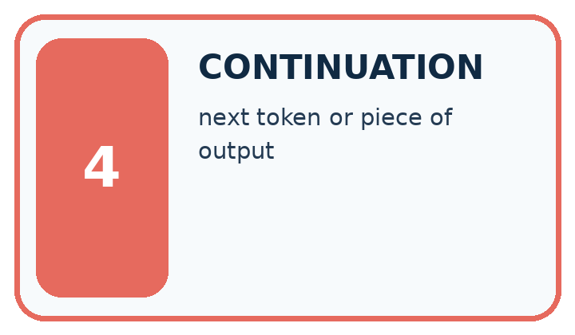
| Word | My own example | Not this / boundary |
|---|---|---|
| distribution | A description of how values or probabilities are spread across possible outcomes. | |
| likelihood | In this introductory context, how plausible an outcome is under a model; in statistics, likelihood has a more specific parameter-based meaning. | |
| sample | A selected group of observations, or an outcome drawn from a distribution; the context identifies which meaning applies. | |
| continuation | Text that follows an existing sequence. |
Words used in the closer explanation
| Word | Meaning |
|---|---|
| Probability distribution | Nonnegative probabilities over stated alternatives that sum to one |
| Conditional probability | A probability evaluated given specified information |
| Sequence probability | The product of successive conditional probabilities under an autoregressive model |
| Probability mass | The probability assigned to an alternative or a set of alternatives |
Terms for Embeddings and position
| Term | Meaning |
|---|---|
| Embedding | A vector associated with a token under a specified model |
| Position vector | A vector carrying information about a sequence position |
| Representation width | The number of components in each vector |
| Elementwise addition | Adding corresponding vector components |
Student lesson · 6 of 14
Follow a worked example
WORKED EVIDENCE
Reason Step by Step
Predict first. Then check each step. A correct answer without visible reasoning is incomplete evidence.
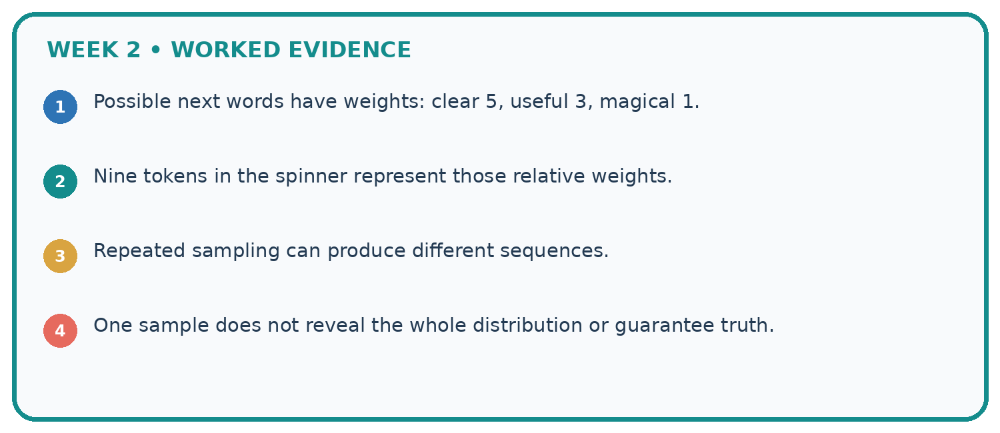
1. Possible next words have weights: clear 5, useful 3, magical 1.
2. Nine tokens in the spinner represent those relative weights.
3. Repeated sampling can produce different sequences.
4. One sample does not reveal the whole distribution or guarantee truth.
Recalculate, retrace, or restate the reasoning in your own representation:
CHECK Did the evidence answer the exact question? Did the total, path, or source record stay consistent?
A closer explanation
Greedy decoding chooses the largest next-token probability at each step, with an explicit tie rule if needed. It does not always maximise the probability of a complete sequence. Counterexample: first-step A=0.6 and B=0.4. Given A, end=0.51 and x=0.49; given B, end=1. Greedy produces A,end with probability 0.306. The path B,end has probability 0.4, larger than 0.306. This comparison concerns exactly two-step paths; longer completion probabilities require the later conditionals too.
A high path probability measures the model’s preference over these specified paths. It is not evidence that a status claim matches a live observation. Format checks and source checks remain separate.
Apply the connected idea: Embeddings and position
The elementwise sum of the represented rows is [3,1] for both red blue and blue red. This aggregate loses the row-order distinction despite the position additions. A later computation must actually use the represented rows appropriately; merely adding position vectors does not guarantee that every summary preserves order.
A position scheme may use learned values or a deterministic construction. The original Transformer added positional information to embeddings. Modern architectures can use other order-sensitive schemes. Our two-vector example demonstrates one possible mechanism and one information-loss failure, not all architecture choices.
Learn from the worked case
Cover the result before checking it. Say what is given, choose the procedure, and follow one step at a time. Then uncover the result and explain your first mismatch. Ask why a step is allowed, not only what number it produces.
A pictorial worked case: A Distribution of Possibilities
A fictional two-stage token tree illustrates next-token prediction.
The facts we will use
First token probabilities: sun 0.55, rain 0.45. Given sun: end 0.4, more 0.6. Given rain: end 0.9, more 0.1.
These are complete toy branches; end paths stop, more paths do not.


Read the picture one step at a time
Why this result follows
Conditional probabilities describe what follows a particular prefix. Multiplying along a path gives its joint probability. The four branch products sum to 1, but the two end paths sum to 0.625 because more branches have not ended. Greedy decoding selects sun then more; it does not guarantee the most likely complete sequence.
What this example does not establish
These word labels and tiny tables are illustrative; path probability is not a measure of real-world truth.
Student lesson · 7 of 14
Find and repair a mistake
ERROR DETECTIVE
Compare → Diagnose → Repair
Do not patch the answer. Find the earliest unsupported assumption, wrong step, or weak evidence.
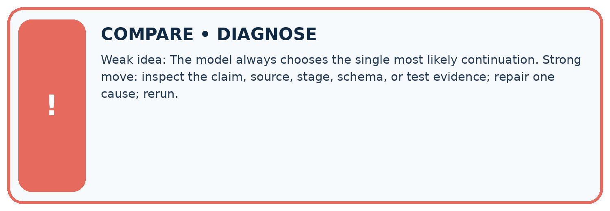
| Evidence record | Expected | Actual | Likely cause / next test |
|---|---|---|---|
| normal case | works | ||
| boundary case | stated rule | ||
| missing input | safe response | ||
| fresh transfer | generalizes |
Repair one cause. Why is this repair better than changing several things?
A closer explanation
Always report the prefix, alternatives and stage. The complement of ready in the first table is busy or unknown, probability 0.5; it is not automatically busy. Values rounded for display may not sum exactly to 1, so retain full values for calculations and label rounding. A missing or invalid table should lead to an explicit error, not a confident probability claim.
Apply the connected idea: Embeddings and position
State whether a vector is a token embedding, a position vector or their combination before calculating distances. Position changes can affect numerical similarity even for the same token. An unknown token or a sequence beyond the toy position table needs explicit handling. This two-position contract rejects a third position; it does not silently wrap back to position 0.
Student lesson · 8 of 14
Practise together
LOGIC STUDIO
Specify Before You Run
Prompts, schemas, retrieval, tool calls, and code are inspectable parts of one AI product.

SET task, audience, constraints, output_schema LOAD approved_context or retrieval_result CALL model or allowed_tool VALIDATE fields, claims, citations, and safety IF evidence missing: ask, retrieve, or abstain RETURN useful output + source trail + limitations
Trace one input. Which line changes the state or chooses a path?
A closer explanation
Supported table: first red=0.4, blue=0.6. End given red=0.9 and end given blue=0.5. The red,end path has probability 0.36. The blue,end path has probability 0.3 despite blue being the larger first-step probability.
Apply the connected idea: Embeddings and position
Supported case: embeddings A=[2,1], B=[1,3], positions [0,0] and [1,-1]. Sequence A B becomes [2,1] and [2,2]. Sequence B A becomes [1,3] and [3,0]. Both sums are [4,3].
Practise with less help: Calculate the paths
Use workbook W2 for the connected example “Next token distributions”. First fill the input and rule boxes. Try the middle steps before asking for a hint. After a hint, try the next step yourself.
| Plan | Do | Check |
|---|---|---|
| What is given? Which rule or procedure applies? | Record each intermediate step. | Does the result follow? What remains unknown? |
Explain your trace to a partner. Your partner points to one step to check. Swap roles on the next case. Each person writes their own explanation.
Check your reasoning
Use the worked case for Next token distributions. Proposed explanation: “Conditional products assume independence”. Decide whether this explanation is supported. Point to the step or supplied fact that decides; explain your repair if needed.
Answer on your own before discussion. If you are unsure, say which step you need help with.
Practise the connected topic: Embeddings and position
Use its named workbook W2. Identify the given inputs, try the middle steps with less help, then explain your trace. Check this claim before group discussion: A position vector guarantees every summary preserves order
Explain the picture
Why is 0.625 not a broken probability sum?
This is supported practice. Keep the separately named independent case for an attempt before feedback.
Student lesson · 9 of 14
Run the investigation
EVIDENCE LAB
Predict → Test → Record → Explain
Keep expected and actual results separate. Surprises are useful data when recorded honestly.
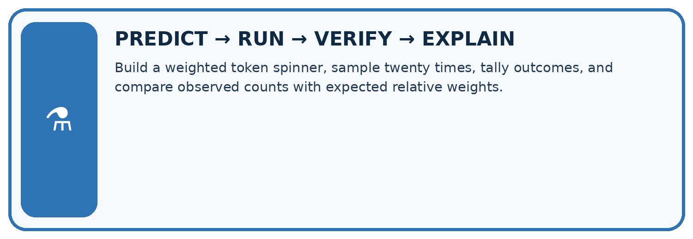
Build a weighted token spinner, sample twenty times, tally outcomes, and compare observed counts with expected relative weights.
| Test / input | Prediction | Actual | Evidence / calculation | Change or keep? |
|---|---|---|---|---|
| normal | ||||
| boundary | ||||
| missing | ||||
| fresh transfer |
What did the hardest test teach you that the normal test did not?
Plan → try → check
Before trying: what do I expect, and why? While trying: which step could first go wrong? Afterwards: what did I actually observe, and what should change? Keep “not run” if you only traced the procedure.
Student lesson · 10 of 14
Build your understanding
MASTERY
From Knowing the Word to Owning the Idea
Move upward only when you can produce evidence without copying the worked example.

1 • NAME: Define the concept without repeating the textbook.
2 • TRACE: Show the information, state, branch, calculation, or evidence path.
3 • APPLY: Solve a different example independently.
4 • CHALLENGE: Find a boundary case, counterexample, or unfair outcome.
5 • EXPLAIN LIMITS: Say when the result should not be trusted or used alone.
My strongest evidence of independent understanding:
Student lesson · 11 of 14
Connect your project
CUMULATIVE PROJECT
Verified Study Buddy
Every week adds one inspectable piece. The system must show how it reached a result.
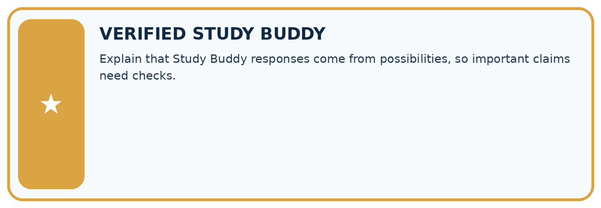
THIS WEEK’S CHECKPOINT Explain that Study Buddy responses come from possibilities, so important claims need checks.
SYSTEM MAP Learner need → prompt/schema → approved sources/retrieval → model/tool → structured answer → verification → human decision
What will you add, change, or verify in the project this week?
What should remain under human control?
RESPONSIBLE DESIGN Collect only necessary information. Show uncertainty and limits. Never confuse fluent output with verified truth.
Evidence for your project
Explain Study Buddy generation as conditional choices, while checking the finished factual claims against sources.
Student lesson · 12 of 14
Show what you know
INDEPENDENT MASTERY PROOF
Explain • Transfer • Test • Defend
Complete this page without copying the worked example. Your reasoning matters more than decoration.
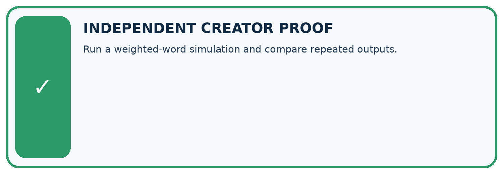
CHALLENGE Run a weighted-word simulation and compare repeated outputs.
1. My fresh example, trace, calculation, or design:
2. My evidence that it works (include a boundary or missing-data case):
3. One limitation, fairness concern, or situation needing human review:
SELF-CHECK □ I explained the mechanism □ I used evidence □ I tested a fresh case □ I named a limitation □ I can answer ‘why?’
Student lesson · 13 of 14
Study a complete case
Week 2 Worked case
Use the supplied details to practise the weekly concept before attempting the independent question. This case extends the illustrated lesson.
The situation
A toy next-token distribution is rain .5, sun .3, snow .2.
The question
Check total and interpret the largest value.
Worked explanation
Total is 1. Rain is most likely, not guaranteed under sampling. Token probability is not whole-sentence truth.
Explain it in your own words
Which detail supports the answer, and why does it matter?
Trace the supplied case visually
A toy next-token probability distribution
| Evidence or stage | Value or result |
|---|---|
| rain | 50 |
| sun | 30 |
| snow | 20 |
A toy next-token distribution is rain .5, sun .3, snow .2.
Check total and interpret the largest value.
Total is 1. Rain is most likely, not guaranteed under sampling. Token probability is not whole-sentence truth.
Student lesson · 14 of 14
Try a new case independently
Independent case: Analyse a new table independently
First tokens go=0.4, wait=0.35, ask=0.25. End probabilities given them are 0.5,0.8,1 respectively; each branch has a complementary more token. Compute all three end-path probabilities and their sum. Which first token is greedy, which end path is largest, and does either verify a real status?
Attempt this case before feedback. Record any help. Earlier examples below are further practice; a case already practised with feedback cannot establish fresh transfer.
Week 2 Independent application
Close the worked explanation. Apply the idea to this different question without copying.
A toy next-token distribution assigns cat 0.5, dog 0.3 and bird 0.2. Check the total and name the most likely token. Must it be selected every time when sampling?
My answer, with a trace, calculation or supporting evidence
Create and test
Change one relevant detail. Predict the result before testing. Include a boundary or missing-information case when it helps reveal a limit.
My changed input and expected result
Connect to your project
Explain that Study Buddy responses come from possibilities, so important claims need checks.
The evidence I will keep
Your teacher has the independent answer and scoring criteria. Complete the matching workbook week to keep your practice evidence together.
Transfer practice from the original programme
A toy next-token distribution is sun=.5, rain=.3, snow=.2. Over ten samples, must sun occur exactly five times? Does the highest-probability token establish a true statement about weather?
Use feedback to improve
Attempt the independent case before hints. Record whether you worked alone, used a hint or followed a model. After feedback, fix the first unsupported step and explain why it changed. A later check uses a changed case, not a copied answer.